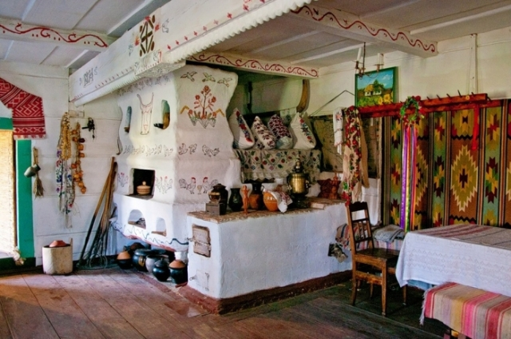

Українська хата. Історія.

Xата є своєрідним втілення української ментальності, однією з форм її сучасної духовності. По мірі формування свідомості хата пройшла путь від символу,
синкретичного уявлення, через образ, знак, і в останньому столітті сформувалась як ідея, певний естетичний критерій, показник світогляду та світосприйняття.
Наші предки ще здавна боялись злих духів, вони були не менш шкідливі та небезпечні, ніж матеріальні вороги чи хижі звірі.
Тому кожний українець намагався захистити своє житло як тільки міг. Його укріплювали, роблячи з нього фортецю, або «охрамовували».
Слово «храм» займає місце поруч зі словом «схрон», «Хороми», тобто це вказує на сакральність споруди з точки зору свідомості XIII-XVII ст.
Хати наповнювали оберегами, магічними знаками та предметами. Велику роль відігравало спеціальне оформлення інтер’єру житла.
Оздоблювались отвори – вікна, комин, двері, адже саме вони могли пропустити нечисту силу.
Таким чином вся хата ставала магічно-практичним оберегом, в якому кожна річ мала свою вартість та значення.
І вся хата перетворювалась на осередок добробуту, схованку затишку, щастя та безпеки.
У національній свідомості українця хата є не просто місцем для проживання, а своїм, рідним, власним куточком. Кожен господар у своїй хаті є пан.
Своє власне житло дає простір діям, воно приймає людину яка б вона не була. Тому і господарем вона сприймається як своє рідне, близьке до серця.
Цікаві факти про ліжко.
1. Найбільша колекція ліжок (413 штук) належала королю Франції Людовику XIV. Неважко підрахувати, скільки б йому знадобилося часу, щоб переночувати на кожному з них.
2. Надувне ліжко було придумане для використання в поїздах. Але через те, що матраци наповнювали гарячою парою їх міцність була не на висоті й іноді траплялися нещасні випадки. Через це від використання на певний час відмовилися.
3. Китайці пропонували ліжко з центральною системою опалення.
4. Ліжко має свій пам’ятник. Він встановлений у США, штат Огайо.
Як правильно обрати ліжко?
При виборі ліжка в інтернет магазині Вам в першу чергу потрібно вибрати матеріал. Найбільшою популярністю користуються дерев'яні ліжка, виготовлені з вільхи, ясена чи дуба. Такі моделі чудово прикрасять Вашу спальню у квартирі чи приватному будинку. Для орендованих квартир, під здачу, більше підійде ліжко з металу, так як воно просто «не вбивається», а також має дуже демократичну ціну. Для Вашої зручності ліжко може комплектуватись висувними ящиками або підйомним механізмом. Ящики можуть бути з одного боку ліжка або з двох. Також є моделі, з висувними ящиками спереду. Ліжка з підйомним механізмом, це відмінне рішення, для невеликих кімнат, вони дозволяють заощадити простір і мають велику нішу для зберігання постільної білизни. Всі дерев'яні ліжка комплектуються буковими ламелями. Спальне місце з ламельною основою може витримувати навантаження до 150 кг на одне спальне місце. Відстань між ламелями, у своїй має бути 2,5-3 див. Кожне ліжко може бути забарвлене у різні кольори: чорні, білі, сірі, венге, у кольорі горіх. Завдяки цьому ліжко можна підібрати під будь-який інтер'єр.
Оформлення вітальні. Які м'які меблі краще вибрати?

Вітальня – це основна кімната у кожному будинку. Саме вона служить для прийому гостей, проведення часу всією сім'єю та просто для відпочинку у приємній теплій атмосфері. Оформляючи свій будинок та вітальню зокрема, всі намагаються зробити її максимально зручною, комфортною та красивою. Основним та центральним елементом оформлення вітальні, як і будь-якої іншої кімнати, є м'які меблі. Будь-які меблі для вітальні повинні бути не тільки стильними і красивими, але і функціональними. На таких меблів має бути зручно та приємно відпочивати та приймати гостей. Однак сьогодні існує величезна різноманітність найрізноманітніших м'яких меблів для вітальні, яка підходить для кімнат різних розмірів і форм. На чому варто зупинити свій вибір? Як краще оформити свою вітальню, щоб вам було комфортно, а гості хотіли приходити до вас знову та знову?
- Прямі дивани. Такі дивани вважаються класикою. Вони підходять для віталень будь-яких форм та розмірів. Прямий диван виглядає стильно та лаконічно, на ньому зручно відпочивати, приймати гостей або навіть спати. Прямі дивани можуть стояти біля стіни, так і в центрі кімнати. Багато моделей прямих диванів легко розкладаються, перетворюючись на повноцінне спальне місце. Також більшість диванів мають великі та місткі ніші, які є додатковим місцем для зберігання;
- Кутові дивани Кутові дивани вважаються найзручнішими та комфортнішими. Вони ідеально підійдуть для приємного проведення часу в колі сім'ї або друзів. Кутові дивани в основному використовуються для оформлення великих віталень, так як вони займають багато місця, і для кімнат з невеликою площею просто не підійдуть;
- Тахти. Тахта - це одна з варіацій дивана, але стильніша і мінімалістична. Виглядають тахти дуже незвично і можуть підійти для будь-якого інтер'єру. Також тахти більше ніж звичайні дивани підходять для сну, оскільки в їх основі не пружинні блоки, а дерев'яні ламелі або ортопедичні матраци;
- Крісла. Крісло – це особливий предмет інтер'єру. Сучасні дизайнери не часто використовують його, вважаючи застарілим, проте саме крісла створюють особливий затишок та комфорт у будь-якій кімнаті. Сьогодні існує величезна різноманітність класичних та сучасних моделей крісел, що дозволяє кожному відшукати ідеальне крісло для свого будинку;
- Набір меблів. Комплект м'яких меблів – це відмінне рішення для тих, хто хоче меблювати свою вітальню не лише диваном, а й кріслами. Існують набори з одним або двома кріслами, із прямими або кутовими диванами. Основна перевага будь-якого готового меблевого гарнітура – це те, що предмети меблів у ньому ідеально поєднуються один з одним, і вам не потрібно буде витрачати свій час та сили на їхній підбір.